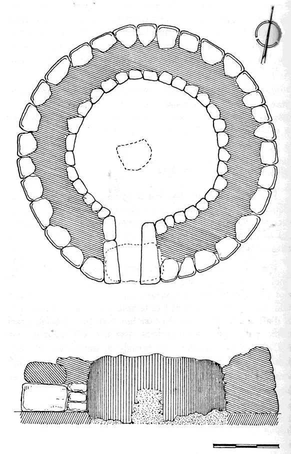
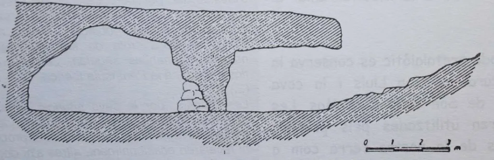

El talayot circular de Es Baulenes se encuentra situado en un espacio recóndito del Pla mallorquín, en el término municipal de Porreres. Bien se podría decir que hay que ir a propósito para visitarlo, ya que hay que recorrer carreteras y caminos secundarios hasta localizar el yacimiento.
A pesar de estar al lado del camino hay que estar atentos para su localización, si no puede pasar inadvertido. Hace tiempo que no se realiza ningún trabajo arqueológico en el monumento y requeriría como mínimo una buena limpieza exterior y una excavación interior. El talayot y sus muros no superan los dos metros, sin embargo el portal -orientado a 170 grados, sur- se conserva en muy buen estado y visto de frente es de una gran envergadura y majestuosidad. Tiene un diámeto exterior de 8,4 m y la cámara interior de 6,5 metros. Rodeado por una alambrada, queda afeado respecto del entorno.
El pasado 17/07/2021 se llevó a cabo una limpieza y adecuación del Talayot de Es Baulenes supervisada por el historiador Enric Ragnar Backman y auspiciada por el Ayuntamiento de Porreres. El objetivo final es la puesta en valor y fomentar las visitas del patrimonio del municipio en el que se podrían añadir los yacimientos de Es Pou Celat o Es Pagos. También se contó con la colaboración del historiador y arqueólogo Ramón Martín que mostro, cercano al talayot, los restos de posibles habitaciones talayóticas, y lo que es más importante, una cueva de enterramiento, apenas mencionada en publicaciones pero que mantiene un porte espectacular hoy en día. Dicha cueva ha sido lugar de estabulación del ganado hasta tiempos recientes por lo que es casi imposible el hallazgo de restos arqueológicos.
